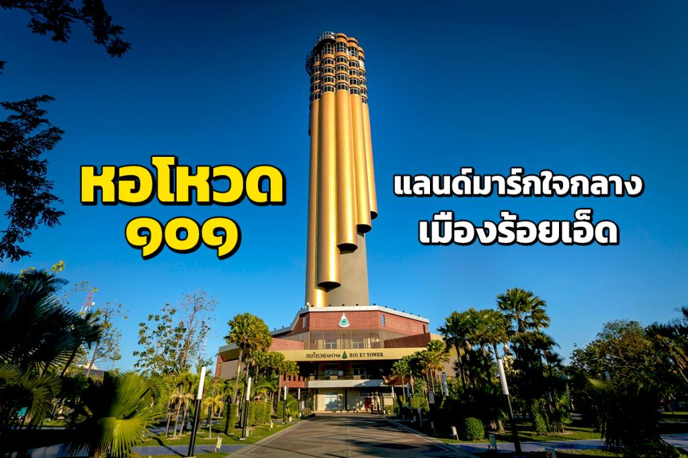
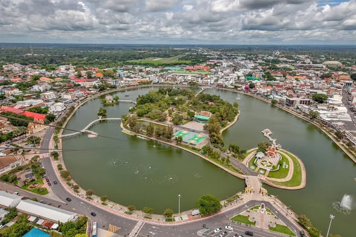
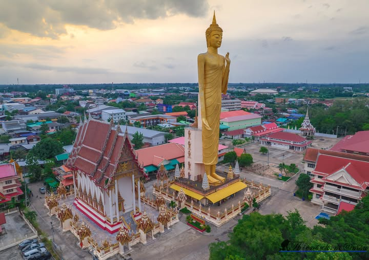

หอโหวด 101 เป็นแลนด์มาร์กสำคัญของจังหวัดร้อยเอ็ด สามารถขึ้นไปชมวิวเมืองแบบ 360 องศา และเป็นจุดถ่ายรูปยอดนิยม อีกทั้งยังมี zipline ให้นักท่องเที่ยวสามารถเล่นได้

บึงพลาญชัยเป็นสวนสาธารณะขนาดใหญ่ใจกลางเมืองจังหวัดร้อยเอ็ด เหมาะสำหรับการมาพักผ่อน ออกกำลังกาย เดินเล่นชมวิว อีกทั้งยังสามารถโหน zipline จากหอโหวดลงมาที่บึงพลาญชัยได้ด้วย

วัดบูรพาภิรามเป็นที่ประดิษฐานของ "หลวงพ่อใหญ่" พระพุทธรูปยืนขนาดใหญ่ที่ชาวร้อยเอ็ดเคารพศรัทธา
พระมหาเจดีย์ชับมมงคล เป็นเจดีย์ขนาดใหญ่ที่สวยงาม เป็นศูนย์รวมจิตใจของชาวพุทธและเป็นสถานที่ท่องเที่ยวสำคัญ